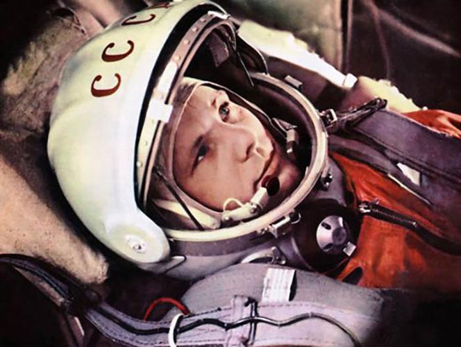

Юрий Гагарин
Первый запуск первого человека в космос, Юрий Гагарин.
Дата рождения 9 марта 1934
Ю́рий Алексе́евич Гага́рин (9 марта 1934, Клушино, Гжатский (ныне Гагаринский) район, Западная область (ныне — Смоленская область), СССР — 27 марта 1968, возле села Новосёлово, Киржачский район, Владимирская область, СССР) — лётчик-космонавт СССР, Герой Советского Союза, кавалер высших знаков отличия ряда государств, почётный гражданин многих российских и зарубежных городовПерейти к разделу «#Почётные звания и награды».
Полковник ВВС СССР (1963), военный лётчик 1-го класса, заслуженный мастер спорта СССР (1961), член ЦК ВЛКСМ, депутат Верховного Совета СССР 7-го и 8-го созывов.
12 апреля 1961 года Юрий Гагарин стал первым человеком в мировой истории, совершившим полёт в космическое пространство. Ракета-носитель «Восток» с кораблём «Восток-1», на борту которого находился Гагарин, была запущена с космодрома Байконур, расположенного в Кызылординской области Казахстана. После 108 минут полёта Гагарин успешно приземлился в Саратовской области, неподалёку от Энгельса. 12 апреля 1961 года, день полёта Юрия Гагарина в космос, был объявлен праздником — Днём космонавтикиПерейти к разделу «Полёт».
«Восток-1»
«Восток-1» («Восток») — советский космический корабль из серии «Восток», первый в мире космический аппарат, поднявший на своём борту человека на околоземную орбиту.
Кодовое обозначение спутника — «ПС-1» («Простейший Спутник-1»). Запуск был осуществлён с 5-го научно-исследовательского полигона Министерства обороны СССР «Тюра-Там» (получившего впоследствии открытое наименование космодром «Байконур») на ракете-носителе «Спутник», созданной на базе межконтинентальной баллистической ракеты «Р-7».Перейти к разделу «Запуск и полёт»

Корпус спутника ПС-1 состоял из двух силовых полусферических оболочек диаметром 58,0 см из алюминиево-магниевого сплава АМг-6 толщиной 2 мм со стыковочными шпангоутами, соединёнными между собой 36 шпильками М8×2,5. Перед запуском спутник был заполнен сухим газообразным азотом под давлением 1,3 атмосферы. Герметичность стыка была обеспечена прокладкой в виде кольца из вакуумной резины с прямоугольным сечением. Верхняя полуоболочка имела меньший радиус и прикрывалась полусферическим внешним экраном толщиной 1 мм для обеспечения теплоизоляции. Поверхности оболочек полировались и обрабатывались для придания им специальных оптических свойств[прим. 1]. Внутри герметичного корпуса были размещены: блок электрохимических источников (серебряно-цинковые аккумуляторы); радиопередающее устройство ПС-1; вентилятор, включающийся от термореле при температуре выше +30 °С и выключающийся при понижении температуры до +20…23 °С; термореле и воздуховод системы терморегулирования; коммутирующее устройство бортовой электроавтоматики; датчики температуры и давления; бортовая кабельная сеть. Масса — 83,6 кг. Масса источников питания составляла около 50 кг
Кто первым должен лететь в космос, у Главного конструктора Особого конструкторского бюро № 1 Госкомитета Совета Министров СССР по оборонной технике С. П. Королёва и его сподвижников сомнений не вызывало — это должен быть лётчик реактивной истребительной авиации. С учётом особенностей и возможностей космической техники понадобились особые кандидаты — люди абсолютно здоровые, профессионально подготовленные, дисциплинированные, возраст — около 30 лет, рост — не более 170 см, вес — до 68—70 кг[7]. В первом отряде космонавтов обозначились два лидера — Юрий Гагарин и Герман Титов. 3 апреля 1961 года состоялось заседание Президиума ЦК КПСС, которое проводил Н. С. Хрущёв. По докладу заместителя Председателя Совета Министров СССР Д. Ф. Устинова Президиум ЦК принял решение о запуске человека в космос.
Характеристики
Масса аппарата — 4,725 т
Диаметр герметичного корпуса — 2,2 м
Длина (без антенн) — 4,4 м
Максимальный диаметр — 2,43 м.